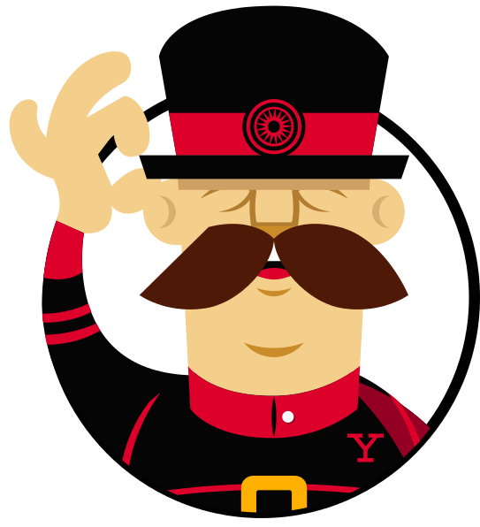

Umiejętności
Technologie i narzędzia
Skala umiejętności jest poglądowa, najwyższy poziom nie oznacza wiedzy na poziomie eksperckim, raczej bardzo dobrym na stanowisko JUNIORA. Opis i skalowanie ma wstępnie zobrazować moją osobę. Jednak najlepszym sposobem prezentacji jest rozmowa, do której zachęcam.
-
HTML 5
Poziom
Na poziomie bardzo dobrym
-
CSS 3
Poziom
Na poziomie bardzo dobrym


-
Java Script
Poziom
Na poziomie podstawowo-średnim


-
Wordpress
Poziom
Samodzielne pisanie motywów z podstawowym wykorzystaniem możliwości Wordpressa
Edycja i konfiguracja gotowych motywów, obsługa DIVI
Konfiguracja WooCommerce i podstawa budowanie motywu
-

Bootstrap
Poziom
Podstawowa znajomość
-

Gulp
Poziom
Wykorzystuję w każdym projekcie od dłuższego czasu
-

Yeoman
Poziom
Stosuję od niedawna
-

Webpack
Poziom
Podstawa znajomość - wstępne zapoznanie
-

Adobe Photoshop
Poziom
Na poziomie bardzo dobrym
-

Adobe Illustrator
Poziom
Na poziomie średnim
-

Adobe Premiere
Poziom
Podstawowa znajomość
-

Język Angielski
Poziom
Znajomość języka pozwalająca na czytanie dokumentacji.
Certyfikaty

W wolnym czasie
Zainteresowania związane z IT
Wolne chwile lubię przeznaczać na dyskusję lub obserwację konwersacji na grupach dla programistów, wymiana opinii oraz udostępnianie swojego kodu dla większej liczby osób w doskonały sposób podnosi poziom wiedzy.
Dodatkowo staram się być na bieżąco z różnymi blogami branżowymi, takimi jak np.: nafrontendzie.pl, webroad.pl, dailyweb.pl, Maciej Aniserowicz, Mirek Burnejko itp.
Poza IT
Angażuję się w działalność charytatywną, jestem członkiem zarządu stowarzyszenia Ostrowieccy Patrioci
Lubię aktywnie spędzać czas, głównie biegając - maratończyk amator. Lubię również wyzwania, od czasu do czasu biorę udział w biegach z przeszkodami.
Fascynuje mnie świat nauki, programy popularno-naukowe(przeważnie internetowe) potrafią pochłonąć mnie na godziny.